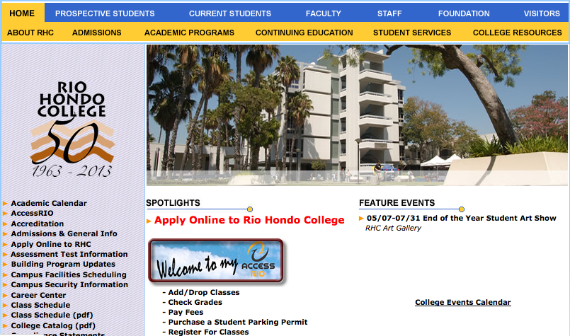
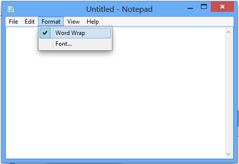
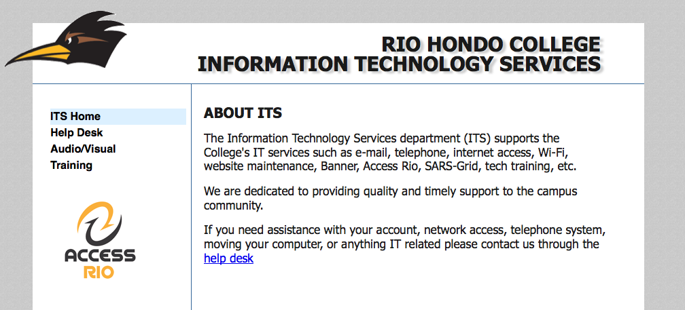
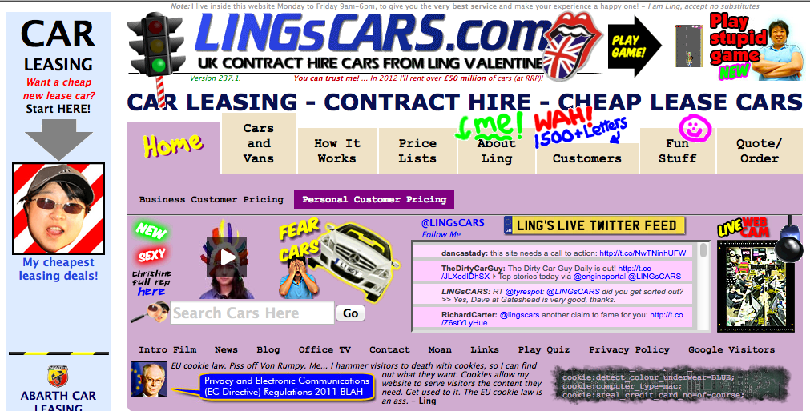
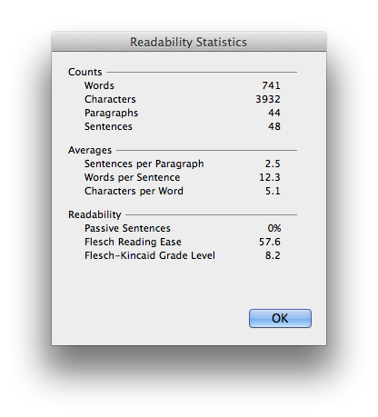
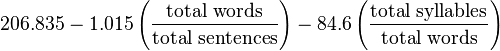
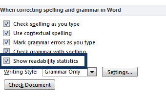
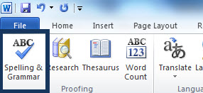
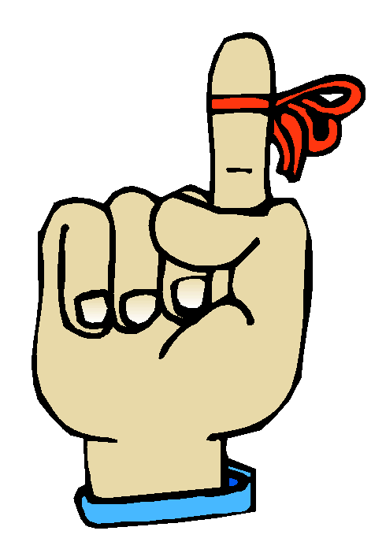

Thank you for being here today!
Your work is very important!
Let's get started!


Why use something so simple when we have word?
Home
- Welcome and About ITS
Help Desk
- Contact Info
- How to access the help desk
- How to Write a Good Help Desk Ticket
Audio / Visual
- Contact Info
- Services Available
Training
- Contact Info
- Scannable Info on areas of training
- Past workshop notes
- Help Articles on Sidebar

Ling missed his training day
from Usability.gov

Try pasting your content into Microsoft Word and use the Readability Statistics feature.
The Flesch Reading Ease score can be used to identify the age at which an audience will be able to understand your writing.
Score Notes
90.0–100.0 easily understood by an average 11-year-old student
60.0–70.0 easily understood by 13- to 15-year-old students
0.0–30.0 best understood by university graduatesHow do they calculate this?

File » Options » Proofing » Enable Readability Statistics

Review » Spelling & Grammar


You can utilize online tools to collaborate efficiently.
This presentation is available at riohondo.edu/its/content_creation